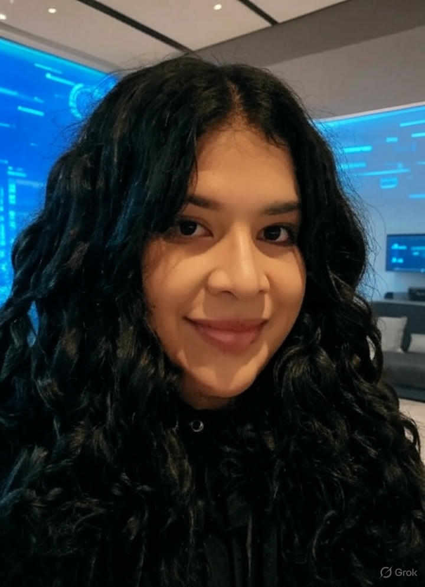
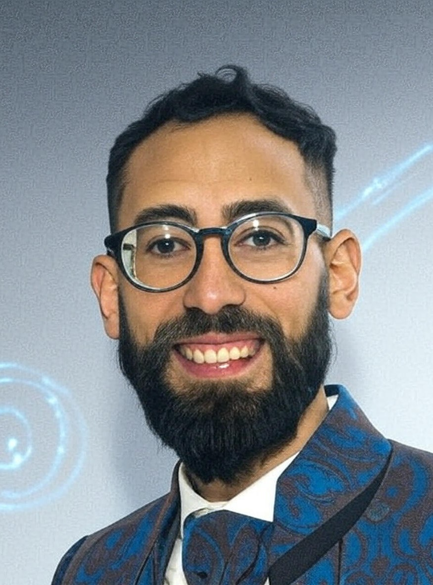

Descubre la sabiduría felina de nuestro equipo docente. Buscamos crear un ambiente donde la curiosidad sea tu mejor aliada y la comodidad, tu guarida.

Más de 5 años de experiencia en la enseñanza recreativa y didactica en niños del nivel incial y primario. Especializada en la programacion ludico en Scratch, Python y App Inventor. Actualmente Maestra en la red internacional de clubes de programación CoderDojo
Tecnica en desarrollo de software por la Tecnicatura Superior Cordoba. Diploma en "Organización de Eventos" (Secretaría de Equidad y Promoción del Empleo) y doble certificación en "Metodologías Ágiles", obtenida en CórdobaIT y Comunidad Mujeres TEC.

Experiencia en la enseñanza de logica y electronica, con un enfoque en el aprendizaje práctico y experimental. 3 años de experiencia en la industria tech y desempeñando actualmente el cargo de profesor en la catedra de "Elementos de Matematica y Logica"
Tecnico Electronico y desarrollador de software por el colegio IPET N°250 y el Instituto Tecnico Superior Córdoba.